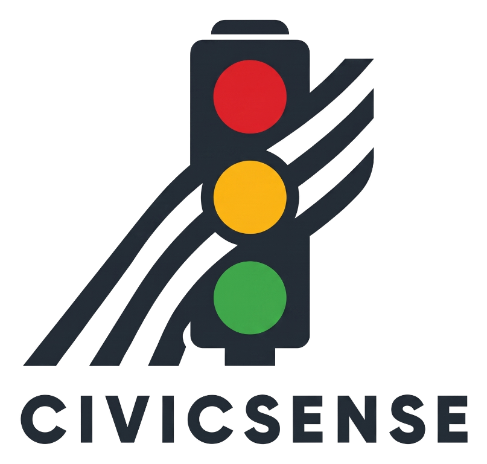

SendaInteligenteDe los primeros transportes a vapor hasta las soluciones urbanas inteligentes actuales.
Comienza el reemplazo del coche a caballo, introduciendo velocidades mayores y mayores riesgos de colisión.
Garret Morgan patenta sistemas de señalización de pare y gira, bases de los semáforos comerciales desarrollados después.
Se incorporan estructuras de acero en vehículos y se publica el primer manual unificado de control de tráfico.
Volvo introduce este hito de seguridad pasiva, reduciendo drásticamente las lesiones fatales.
Integración de placas Arduino, sensores y luces dinámicas para proteger activamente al peatón en zonas urbanas críticas.